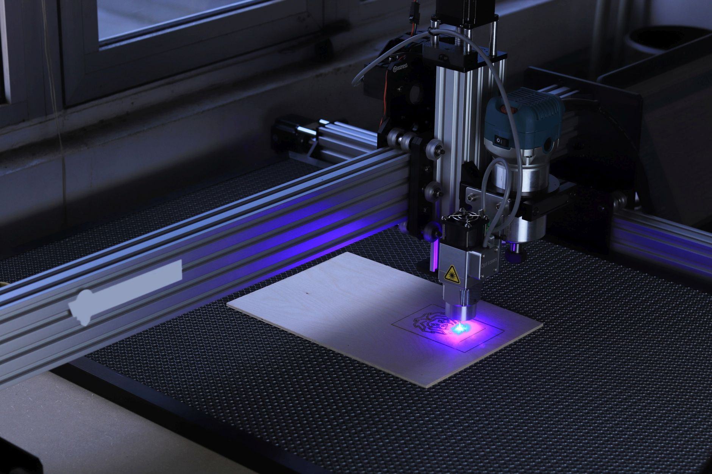

中 DUV·광통신 자립 가속, 미중 반도체 전선 3개로

중국 SMEE(상하이 마이크로전자)는 2025년 90nm급 DUV 노광 장비 양산 목표를 공식화하고 2024년 기준 장비 1대당 약 1,500만 달러 수준의 정부 보조금을 받는 것으로 확인됐다. ASML이 독점하는 EUV 대신 DUV에서 먼저 자립 기반을 구축하는 전략이다.
광통신 부품에서는 화웨이 자회사 HiSilicon이 400G 광트랜시버 핵심 부품인 InP(인화인듐) 레이저 다이오드 국산화율을 2023년 35%에서 2025년 60%로 끌어올렸다고 중국 업계는 주장한다. 글로벌 AI 데이터센터 광통신 시장은 2025년 약 180억 달러 규모로 추산된다.
한국의 광통신 소재 기업 오이솔루션·오포티컬케이블은 화웨이·ZTE에 광트랜시버 부품을 공급해왔다. 중국의 InP 자립 가속은 이들의 중국 매출(각사 전체 매출의 20~30% 추산)을 3~5년 내 잠식할 수 있다.
DUV 장비 자립화가 90nm에서 28nm로 진화할 경우, 삼성·SK하이닉스의 레거시 공정 경쟁력도 직접 위협받는다. 중국 CXMT는 현재 DDR4·LPDDR4 메모리를 28nm 공정으로 양산 중이며 2026년 20nm 전환을 목표로 한다.
DUV와 광통신은 AI 인프라의 '배선'에 해당한다. GPU·HBM이 엔진이라면 광통신 부품은 엔진을 연결하는 파이프, DUV는 그 파이프를 만드는 공장 설비다. 중국이 이 두 레이어를 동시에 자립화하려는 것은 미국의 EUV·첨단 반도체 봉쇄를 우회해 AI 인프라 전체를 자체 조달하려는 장기 전략이다.
한국 입장에서 DUV 자립화의 단기 효과는 중국의 레거시 반도체 증산으로, 이는 D램 스팟 가격 하방 압력으로 직결된다. 현재 DDR4 8Gb 스팟 가격은 2025년 3분기 기준 약 1.8달러인데, CXMT 증산이 본격화되면 1.4~1.5달러까지 하락할 수 있다는 게 시장 관측이다.
네덜란드 ASML은 역설적으로 수혜자다. 중국의 DUV 자립 시도가 오히려 비(非)중국 고객사들의 ASML EUV 의존도를 높이기 때문이다. ASML의 2025년 EUV 수주 잔고는 약 400억 유로로 사상 최고치다.
광통신 자립화 과정에서 중국이 InP 기판·MOCVD 장비를 외부에서 조달해야 하는 구간이 당분간 존재한다. 일본 Sumitomo Electric과 독일 Aixtron이 이 틈새 수혜를 받고 있으며, 한국 소재 기업도 InP 에피웨이퍼 공급 기회를 단기적으로 확보할 수 있다.
삼성전자 파운드리·SK하이닉스 레거시 라인은 중국 DUV 자립이 28nm 이하로 내려올수록 수요 잠식을 피할 수 없다. 삼성 파운드리의 28nm 이상 레거시 공정 매출 비중은 2024년 기준 약 15%로 추산된다.
국내 광통신 부품 기업 오이솔루션·파이버프로는 중국 시장 의존도를 3년 내 대체할 신규 고객처를 확보하지 못하면 매출 20~30% 하락 압력을 받는다. 미국·유럽 광통신 시장은 이미 II-VI(현 Coherent)·Lumentum이 과점 중이라 진입 장벽이 높다.
국내 광통신 소재 기업 투자자는 중국 매출 비중을 핵심 리스크 지표로 관리해야 한다. 중국 의존도 30% 이상 기업은 3년 내 구조조정 압력을 받을 가능성이 높다. 반면 북미·유럽 AI 데이터센터 광통신 공급사 진입에 성공한 기업은 재평가 기회를 가진다.
DUV 장비 국산화 진척 속도는 중국 반도체 공정 로드맵의 핵심 변수다. SMEE의 90nm 양산 성공 여부가 2026년 상반기 중 확인될 예정이므로, 이 시점을 전후로 삼성·SK하이닉스 레거시 공정 전략을 재검토해야 한다.
실제 조달 현장에서는 — 중국 팹이 DUV 장비를 확보한 이후에도 포토레지스트·CMP 슬러리 등 공정 소재는 여전히 JSR·신에쓰·CMC Materials 등 비중국 공급사에 의존하는 구간이 3~5년 이상 지속된다. 한국 소재 기업은 이 시간 창을 활용해 중국 팹 공정 소재 공급 기반을 확대해야 하며, DUV 자립화 이후 소재 의존도 해소까지의 공백을 비즈니스 기회로 전환해야 한다.
이 포스팅은 쿠팡 파트너스 활동의 일환으로 수수료를 제공받습니다.